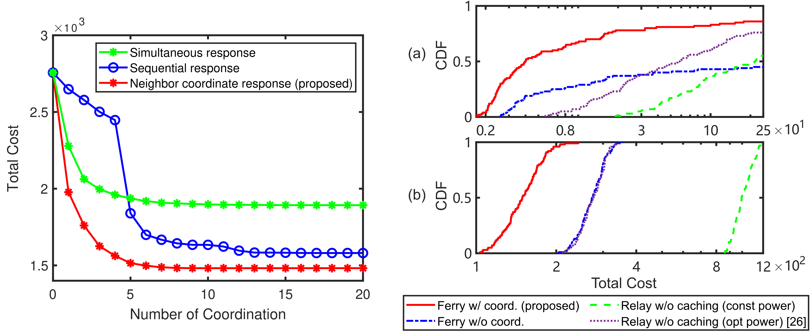

Research Summary
Predictive Communications on UAV Networks
 |
There have been rapidly growing human and autonomous robot activities in the low altitude airspace, which typically extends from the rooftop to 1,000 meters above ground, where the operations may include the transport of commodities and cargo, short-distance transit and tourism, and emergency operations. The UAV network forms a wireless communication network capable of operating parallel to the terrestrial cellular network. The key characteristic of the UAV network is that the network topology is time-varying but usually predictable according to the primary missions of the UAVs, such as cargo delivery. Such a time-varying but predictable network topology induces a new degree of freedom for network communication, where one can optimize for large-timescale opportunistic transmission for delay-tolerant data transportation. |
In order to implement aerial wireless communication networks for predictive communications, we need to handle the following three general challenges.
Air-to-ground interference: Aerial transmissions may cause substantial interference with terrestrial cellular networks due to the high likelihood of line-of-sight (LOS) conditions from UAVs in the sky.
Dynamic topology: The topology constructed by UAVs changes over time, leading to the channel state information (CSI) between the transmitting and receiving nodes (whether intended or not) varies over time.
Uncertain future CSI: Small-scale CSI realization in the future is unknown due to channel randomness.
Cross-layer transmission strategy
This work focuses on the data routing and resource allocation in dynamic network topologies. Traditional schemes rely on time-expanded graphs with uniform and fine time subdivisions, making them impractical for interference-aware applications. This paper develops a dynamic space-time graph model with a cross-layer optimization framework that converts a joint routing and predictive resource allocation problem into a joint bottleneck path planning and resource allocation problem. We develop explicit deterministic bounds to handle the channel uncertainty and prove a monotonicity property in the problem structure that enables us to efficiently reach the globally optimal solution to the predictive resource allocation subproblem. Then, this approach is extended to multi-commodity transmission tasks through time-frequency allocation, and a bisection search algorithm is developed to find the optimum solution by leveraging the monotonicity of the feasible set family. Simulations verify that the single commodity algorithm approaches global optimality with more than 30 dB performance gain over the classical graph-based methods for delay-sensitive and large data transportation. At the same time, the multi-commodity method achieves 100X improvements in dense service scenarios and enables an additional 20 dB performance gain by data segmenting.
Selected publications
B. Li, J. Chen, “Radio Map Assisted Routing and Predictive Resource Allocation over Dynamic Low Altitude Networks,” Submitted, 2025.
B. Li, J. Chen, “Predictive Data Transportation over Low-Altitude UAV Networks with Time-Varying Topology: A Dynamic Graph Approach.” in Proc. GLOBECOM’24, Cape Town, South Africa, 2024.
Low-complexity multi-user transmission strategy
This work studies an interference-aware predictive aerial-and-terrestrial communication problem, where an unmanned aerial vehicle (UAV) delivers some data payload to a few nodes within a communication deadline. The first challenge is the possible interference with the ground base stations (BSs) and users possibly at unknown locations. This paper develops a radio-map-based approach to predict the channel to the receivers and the unintended nodes. Therefore, a predictive communication strategy can be optimized ahead of time to reduce the interference power and duration for the ground nodes. Such predictive optimization raises the second challenge of developing a low-complexity solution for a batch of transmission strategies over T time slots for N receivers before the flight. Mathematically, while the proposed interference-aware predictive communication problem is non-convex, it is converted into a relaxed convex problem and solved by a novel dual-based algorithm, which is shown to achieve global optimality at asymptotically small slot duration. The proposed algorithm demonstrates orders of magnitude of the computational time saving compared to several existing solvers. Simulations show that the radio-map-assisted scheme can reduce the interference to the unintended receivers at known locations below a prescribed threshold and significantly reduce the interference to the users at unknown locations.
Selected publications
B. Li, J. Chen, “Radio Map-Assisted Approach for Interference-Aware Predictive UAV Communications.” IEEE Trans. Wireless Commun., vol. 23, no. 11, pp. 16725-16741, Nov. 2024.
Distributed mixed-timescale transmission strategy
This paper studies a delay-tolerant data transportation problem under the hierarchical information structure, where the large-scale channel information predicted from the predetermined trajectories of the aerial nodes is only locally available. The challenge is exploiting local channel information to optimize the communication strategy in a distributive manner. The objective is to minimize the communication energy and time to control the interference leakage to the ground. Most existing approaches for aerial network communications require intensive centralized coordination, but the trajectory information may not be globally available. To tackle these issues, this paper develops a large timescale two-layer optimization strategy using a game theoretical approach. In the inner layer, a mixed timescale optimization on the power allocation and transmission timing is formulated, which is converted into a one-parameter optimization with an optimality guarantee for a deterministic proxy of the original problem. In the outer layer, a handover time game is formulated, and a neighbor coordinate response strategy based on local information exchange is developed, demonstrating rapid convergence and near-global optimality in simulations. Numerical experiments demonstrate that, under large timescale optimization, an order of magnitude of cost saving can be achieved.
|  |
Selected publications
B. Li, J. Chen, “Large Timescale Optimization for Communications over Aerial Ad Hoc Networks with Predetermined Trajectories,” IEEE Trans. Commun., vol. 72, no. 10, pp. 6371-6385, 2024.
B. Li, J. Chen, “Handover Game for Data Transportation over Dynamic UAV Networks with Predictable Channels,” in Proc. GLOBECOM’22, virtual conference, 2022